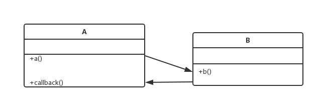

回调
回调，英文是Callback。为了更好的理解，我们将callback拆开，也就是“回拨电话”的意思。那我们就用打电话为例子来说明一下回调到底是怎么运行的：
A同学打电话给B（A call B），那么打电话的人就是A。A在电话里说：“你(B)办完某事后，回拨电话给我(A)。” B做完事后，就会回拨电话给A(call back to B)。这就是现实生活中最简单的回调机制。
用编程来解释的话，是这样的：我调用一个函数f(I call function），那么调用函数的人是我。我让这个函数f在执行完后，调用我传给它的另一个函数c。f执行完的时候，就会调用c，也叫做回调 c（call c back）。类比打电话的例子，这里“我”就是A，函数f就是B，回电话就是函数c。
在介绍回调之前，先看看模块间调用有哪几种。在一个应用系统中，无论使用何种语言开发，必然存在模块之间的调用，调用的方式分为几种：
(1)同步调用
同步调用是最基本并且最简单的一种调用方式，类A的方法a()调用类B的方法b()，一直等待b()方法执行完毕，a()方法继续往下走。这种调用方式适用于方法b()执行时间不长的情况，因为b()方法执行时间一长或者直接阻塞的话，a()方法的余下代码是无法执行下去的，这样会造成整个流程的阻塞。
(2)异步调用
异步调用是为了解决同步调用可能出现阻塞，导致整个流程卡住而产生的一种调用方式。类A的方法方法a()通过新起线程的方式调用类B的方法b()，代码接着直接往下执行，这样无论方法b()执行时间多久，都不会阻塞住方法a()的执行。但是这种方式，由于方法a()不等待方法b()的执行完成，在方法a()需要方法b()执行结果的情况下，必须通过一定的方式对方法b()的执行结果进行监听。在Java中，可以使用Future+Callable的方式做到这一点。
(3)回调
在编程语言中，回调说白了就是传给另一个函数调用的函数。
回调的应用场景：
- 类A的a()方法调用类B的b()方法
- 类B的b()方法执行完毕主动调用类A的callback()方法
这样一种调用方式如下图所示，是一种双向的调用方式。
回调的示意图：

Java回调机制
代码模拟的是这样一种场景：老师问学生问题，学生思考完毕主动回答老师。
首先定义一个回调接口，只有一个方法tellAnswer(int answer)，即学生思考完毕主动告诉老师答案(老师传给学生调用的方法，学生在思考完问题后调用的方法)：
|
|
定义一个老师对象，实现Callback接口：
|
|
老师对象有两个public方法：
（1）回调接口tellAnswer(int answer)，即学生回答完毕问题之后，老师要做的事情，这个方法是学生主动调用的
（2）问问题方法askQuestion()，即向学生问问题
接着定义一个学生接口，学生当然是解决问题，但是接收一个Callback参数，这样学生就知道解决完毕问题向谁报告(Java语法中没用函数指针，不能传函数，所以传入一个接口的实现类，告诉被调用者在完成任务后需要回调哪个方法)：
|
|
定义一个具体的学生叫A：
|
|
做一个回调测试：
|
|
代码运行结果：
老师向学生提问
学生正在思考问题
学生：我思考完了，可以回答问题
老师：知道了，你的答案是3
这个例子模拟的就是一套构成了一种双向调用的关系的流程：
老师调用学生接口的方法resolveQuestion，向学生提问
学生解决完毕问题之后调用老师的回调方法tellAnswer
总结
回调是一种思想、是一种机制，至于具体如何实现，如何通过代码将回调实现得优雅、实现得可扩展性比较高，就因地制宜了。总结起来，回调的核心就是在调用某个函数的同时，告诉该函数在执行完毕后需要调用的函数。由于Java不支持函数指针，所以传入一个接口的实现类(接口中定义了回调逻辑)，告诉被调用者在完成任务后需要回调哪个方法。通常的做法是回调方将本身即this(本身实现了回调接口)传递给调用方，这样调用方就可以在调用完毕之后告诉回调方它想要知道的信息。
回调在很多时候都可以看到，比如Spring在封装JDBC的后提供了jdbcTemplate模版类。jdbcTemplate类提供了模版化的编程，在内部实现了数据库连接的获取，关闭数据库资源的代码，并且提供了回调接口给使用者来完成业务逻辑代码。这样一来，开发者就不用去重复的写数据库连接的获取和关闭数据库资源的代码了，只需要完成业务逻辑即可，不仅简单，而且很安全。
再比如说策略模式、观察者模式还有刚刚提到的模版模式全部都是回调的不同应用。引用知乎R大(RednaxelaFX)的一句话：”简单来说回调就是本来可以写死在一起的代码给拆开来，把让其中一坨保持原有的流程，并在流程中挖出一些空，让另一坨代码作为参数传进来在流程中合适的地方被调用。”言简意赅，R大nc粉。